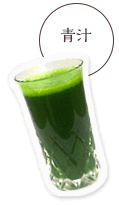
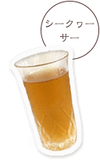
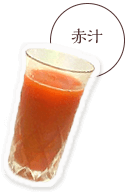
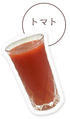
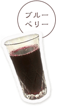

数年前，患大病初次发现健康的重要性，「不想和其他人一样的想」「希望世间的各位健康」这家店开了这个店。
托大家的福，地域密着型店铺和大家喜爱，今年是第10年的迎来了。
谢谢你。
这里有健康食品・生物商品等，我尝试了真的好的东西请选择严格介绍给您介绍。
关于日常生活和健康相关的商谈请随便和您商量。

- 2016.03.22
- 临时休业日４月14日(木)～1...
- 2016.02.01
- 定期喝的人是...



这是我的一个蛋糕
使用合同农家的新鲜甘蓝。用新鲜营养满分！在不苦的人，用柠檬汁或牛奶等地打碎了。
详细是这边

清 爽 的 心 情
シークヮーサー是冲绳出身的橘子的伙伴。以维生素C为首、皮肤好的营养素是满分！不太不太甜酸味、恰到好处的酸味，容易喝饮料。
对 讨 厌 蔬 菜 的 孩 子 也 推 荐
使用有机栽培的国产胡萝卜。胡萝卜具有的本来的味道紧紧地冷凝。就如苹果汁的甜味、对您的孩子也非常受欢迎。

恢 复 积 压 的 疲 劳
在梅所含的柠檬酸，活性化使新陈代谢很难积存疲劳。恰到好处的又酸又甜受欢迎的秘诀！特别是夏季的好评。


在 意 代 谢 和 美 容 的 人
在西红柿里能控制中性脂肪的作用。血液变得很松散，身体整体的状态也会变得很好。特别是对美容有效果，女性◎♪

第 眼 健 康 和 皮 肤 的 老 化 防 止
花青素和维生素A・E对眼睛的健康。因为多酚也很丰富，对年龄皮肤的预防也推荐。很甜，容易喝的饮料。
含 有 的 营 养 素 200 种 以 上 ！
沙棘是沙漠、寒冷地·高地等分布的植物。为了在严酷的环境下生存，丰富的营养丰富。那个沙棘奢侈果汁了。
详细是这边

一 口 的 笔 记MEMO
在铺面上
健康的建议。
以咖啡店感觉轻松
请你来吧！


不只是新鲜果汁，严选了的健康食品也准备了。
当然，在铺面当然，在通讯的销售也可以购买，请一定要看！

ア ク セ ス
〒165-0025东京都中野区沼袋3-28-12
Tel 03-6806-2161
Fax 03-6806-2165
Mail kenko@ikiikikenko.net